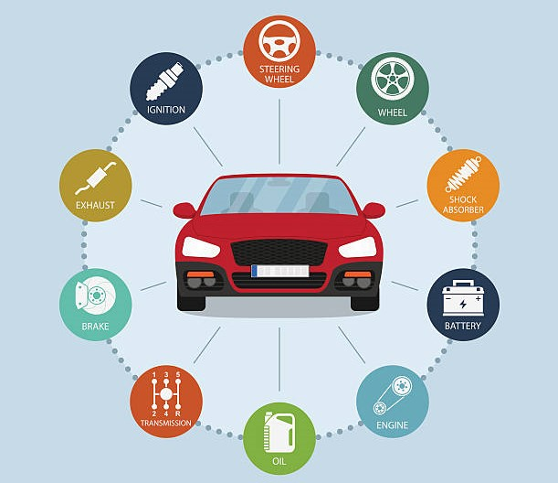
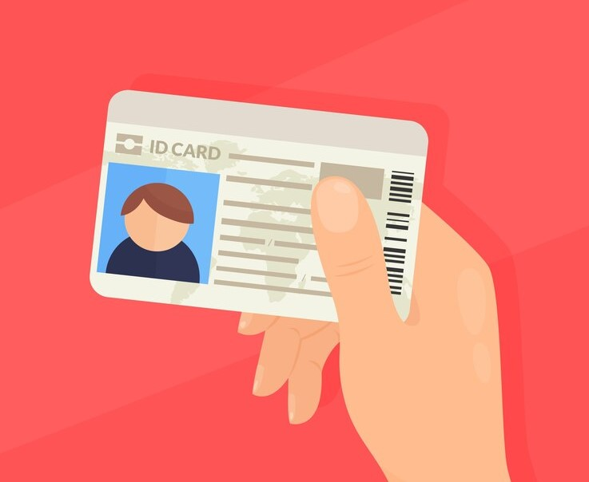

faridnaufal34@gmail.com

082292039360
faridnaufal34@gmail.com
082292039360
Celebes Rent Car hadir untuk memberikan pelayanan yang berkualitas di bidang Jasa rental mobil makassar. Kami memberikan garansi prima untuk setiap layanan mobil yang akan diberikan kepada setiap pelanggan kami. Celebes Rent Car menyediakan armada mobil sewa yang Terawat, Bersih, Aman, Nyaman, dengan harga rental mobil murah, kompetitif dan terpercaya. Kami memberikan pelayanan yang ramah dan selalu siap membantu pelanggan selama 24 Jam. Kami sangat mengutamakan keselamatan, keamanan, dan kenyamanan customer dalam memakai jasa kendaraan kami

Setiap unit mobil di Mario Rent Car Makassar selalu mendapat perawatan rutin mulai dari perawatan harian, Rental Mobil mingguan dan Rental Mobil bulanan. Ketika anda menggunakan layanan kami, dipastikan bahwa kendaraan dalam kondisi sudah bersih, tidak berbau dan dalam performa maksimal
Tarif sewa mobil relatif murah & bisa dibandingkan dengan kompetitor kami. Walaupun kami menyediakan jasa sewa mobil makassar murah, kualitas tetap menjadi perhatian karena Pada akhirnya kepuasan pelanggan yang akan menentukan kelangsungan bisnis kami

Driver yang bekerja Mario rental mobil makassar hanyalah mereka yang berpengalaman & profesional. Kami selalu memberikan pelatihan standar prosedur operasional dimana wajib memenuhi kenyamanan pelanggan mulai dari cara komunikasi sopan, etika dalam mengemudi, rute perjalanan dan wawasan pariwisata.